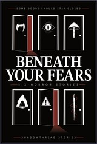
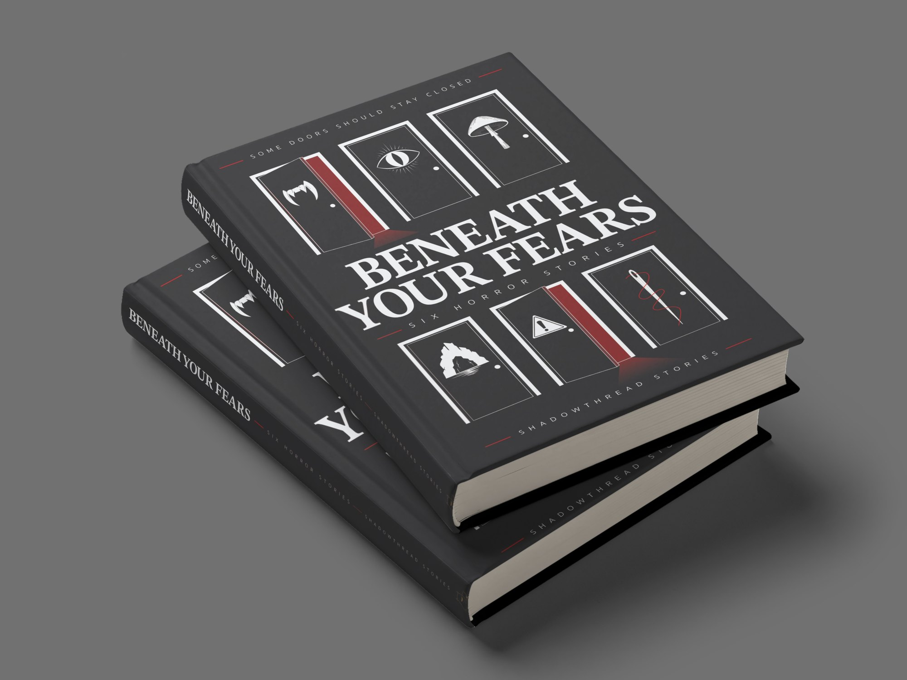
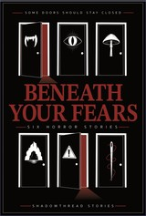

20 : 1White title on black, at 160 px

Some doors should stay closed
Six horror stories
Shadowthread Stories
A cover for an anthology of six unrelated horror stories, built on one simple rule: every story gets its own door.

Beneath Your Fears is the second book from Shadowthread Stories: six horror stories with nothing in common except the book they share. A vampire who hates hunting hires a man too polite to refuse him. A man spends a morning cleaning up after a cat. A girl learns which mushrooms turn deadly with drink. Four friends follow a map to a cave, a husband tapes the windows shut, and two thieves take something from a carnival lot after closing.
The author came with a basic design and a clear idea behind it: six icons along the bottom of the cover, one for each story, in the spirit of the episode symbols in Ozark and the three-icon title of Love Death + Robots. The list was specific (vampire fangs, a cat, a mushroom, a cave entrance, a caution sign and a needle and thread), and so was the mood. They wanted a half-open door in the middle of the cover, something mysterious rather than gory, and they left everything else as full creator's choice.
The book was launching as a Kindle ebook and a paperback, and the two formats pull in different directions. The paperback is a full wrap at a 5.5 by 8.25 inch trim with a 0.4 inch spine, where the back cover has room to explain. The ebook cover is 1600 by 2560 pixels, and its title still has to be readable when the store shrinks it to 160 pixels wide.
An anthology adds a difficulty of its own. There is no main character to put on the front and no single scene that stands for the whole book, so the design has to say six stories, all frightening, all different, at thumbnail size. That ruled out anything that depended on texture or fine detail. The genre had to come through in the shapes, the type and one colour.
The author's own mockup, shown here as a paperback wrap and an ebook front, already had most of the ingredients: a serif title in capitals, a restrained palette, and the six symbols running along the bottom edge. The symbols were the most interesting thing on it and also the smallest, set in a muted gold on a grey gradient at the very foot of the page.
At 160 pixels wide they vanish, which leaves a title on a grey background and very little to say horror. Alongside the mockup came a royalty-free photograph of a dark corridor with light leaking round a half-open door, the mood the author wanted at the centre of the cover. Neither piece needed replacing. The work from here was about bringing them together: moving the symbols out of the footnotes and giving the door a reason to be there.
Three concepts came out of the rough outlines, each combining the door and the six symbols in a different way, and each answering the same question: how do you fit six symbols onto a cover and still have it read as one image?
The keyhole put the door inside a single large lock, with all six symbols gathered in its upper circle. It had the strongest silhouette of the three, although the symbols had to shrink to fit inside it.
The circle set one open door at the centre and arranged the symbols around it like a clock face, held together by a broken red ring. It was the most atmospheric of the three, with an almost ritual feel.
The doors route took the author's single door and made it six, one for each story, three above the title and three below, with the title running across the middle like a corridor. The author was drawn to it straight away, and so was Emma. What sold it was the question it puts to the reader. One door asks whether you want to go in, while six of them ask which one you would open first, which is exactly the right question for an anthology where every story stands on its own.
All three were checked against the same grid of margins, a central axis and shared rows, so the comparison came down to the idea itself rather than which layout happened to be tidier on the day.
The title went through five treatments before it settled. A light sans serif looked clean and modern, which is the wrong promise for this book. Opening up the spacing on a serif gave it more poise but took away its weight. A rough, hand-cut version pushed hard the other way, and once it went red it looked like a B-movie poster, which was fun but cheaper than the stories deserve.
The final title is set in STIX Two Text, bold, in capitals, with the spacing pulled in and the two lines stacked into one dense block. The reasoning was recognition. A heavy serif in tight capitals has been shorthand for horror since the Stephen King paperbacks of the 1980s, several of them set in ITC Benguiat. Stranger Things brought that look back in 2016, when its creators sent a pile of old King covers to the studio designing their titles, and a new audience learned to read it as horror too.
STIX Two Text is a different typeface from the show's, and the cover leaves out everything that belongs to Stranger Things itself: the red outline, the glow, the oversized first and last letters. One early lockup did try scaling up the B and the H so they bracketed the smaller letters, a device taken straight from those old paperbacks. It was dropped for the same reason. What stayed was the weight, the contrast between thick and thin strokes, and the stacking, which is enough to place the book in the right genre at a glance.
Everything that supports the title, from the tagline to the imprint, is set in Sukhumvit Set in small, widely spaced capitals with short red rules either side. It's a clean sans serif with round, open letters, and it sits far enough back that the serif does all the shouting. The type-only front above was the test: if the cover worked with nothing on it but words, the doors would only add to it.
Stripping the doors route right back to six closed doors, the title and nothing else was a useful test. It proved the structure could hold on its own, but six identical closed doors read as a pattern, and patterns are calming.
Opening two of them changed the whole image. A door left ajar is one of the oldest devices in horror, because it tells you something has already come through or is waiting on the other side. The two open doors sit top left and bottom centre, which sets up a diagonal the eye follows down through the title, and the red light spilling from each gives the cover a light source without a single drawn shadow. Opening more would have weakened it. If every door is open, none of them is a warning.
The symbols went onto the doors last, reworked from the author's list: fangs, a cat reduced to a single slit-pupil eye, a mushroom, a cave, a warning sign and a threaded needle, following the order the stories run in. They are sized to the door panel so each one reads as a sign on that particular door rather than decoration floating in the space around it.
The author spotted something in that order which was never planned. Read left to right and top to bottom, the doors run from the lightest story to the darkest, from the snarky vampire and the cat through to the proper horror at the end. It was a happy accident, and it stayed. The one question it raised was whether to close the door with the warning sign, as a gentle hint to start somewhere softer. The stories don't depend on each other and the content warning inside the book already does that job, so the doors stayed as they were and the reading order stays with the reader.
The author's first message asked for icons that looked more realistic, and at the rough-outline stage the plan was still to add shading and depth. Seeing the outlines together changed that. The flat, two-colour graphic style keeps its shape at 160 pixels, where soft shading would turn to mud, it prints cleanly on a paperback, and it keeps the six symbols reading as one set. The author's call was 2D for this one, and the cover was cleaned up and finished in that style.
The tagline was the last thing to change. Early versions read some things should stay closed, and when the author felt the word things was too bland, Emma suggested some doors should stay closed. Now the words and the picture say the same thing.
Everything on the front hangs off one central axis. The title is the biggest element and sits in the middle band, which splits the doors into two rows of three. The tagline at the top and the imprint at the bottom share the same small spaced capitals and red rules, so they work as a matching pair of bookends. That leaves a clear reading order: the title first, then the two red doors, then the symbols, then the small type. A thin inset border frames the lot, giving the black edge of the page a clean stop at any trim.
The palette is black, white and a single dark red, and the red was the hardest thing to place. One version set the whole title in it. At full size on screen it looked moody, but the Kindle requirement was a title readable at 160 pixels wide, and that is where the red starts to struggle. Measured against the black background with the standard WCAG contrast formula, it came out at roughly 2.4 to 1, against about 20 to 1 for white. Both versions are shown below at 160 pixels wide. The red one can still be read, but it takes a second look, and someone scrolling past a page of results won't give it one.

2.4 : 1Red title on black, at 160 px

20 : 1White title on black, at 160 px
So the red came off the type and went into the light. It spills out of the two open doors, runs through the thread on the needle, and sits in the short rules either side of the small capitals. Used that sparingly, it only turns up where something is wrong, which is the job red does best on a horror cover. White took the title, because white against black is as much contrast as a printed page can give, and the title has to survive at every size.
One of the six stories was swapped out partway through the project. The symbols still fitted, so only the back cover copy had to change, and that copy then went through several layouts. The first centred everything: the tagline, a three-line statement in the title serif, each story as a single sentence, and a closing question, which door will you open? It was tidy, but it read like a list, and the stories had lost the symbols that made the front work.
The second set the stories on a three-column grid, each one directly under its symbol, so the back became a key to the front. A reader who turns the book over can match every door to its story without being told to. It was the author's favourite of the layouts, and Emma's too. The columns line up with the door columns on the front, so both sides of the wrap share the same skeleton even though they do different jobs.
The back is read in a fixed order. The tagline comes first, in the same small spaced capitals as the front. The statement sits below it in STIX Two Text as the largest type on the page, then the symbols, then the one-line blurbs in Sukhumvit Set. The question comes last, set wide and pushed to the right so it lands above the barcode, while a red door opens at the bottom left in the same light as the front and answers the question without a word.
The blurbs took the most back and forth. Justified text keeps each blurb as a block the same width as its column, which is what holds the grid together from a distance, and it was compared against other settings in Affinity before committing. The catch with justifying a column this narrow is that short lines open up uneven gaps between words, so the line breaks in each blurb have to be watched as closely as the grid itself.
The finished wrap
The finished cover keeps the author's first idea intact and gives it a structure strong enough to carry it. The six symbols have gone from a strip along the bottom to the frame of the whole design, and front and back now share a grid, a palette and a single source of light.
Once the cover was locked, the author asked for a behind the scenes like the one for Knight Errant, to hear how it came together and what spoke to Emma along the way. This page is that answer.
Full sizeKindle ebook cover
160 pxThe size it had to survive
Get the book
Beneath Your Fears is published by Shadowthread Stories. Six doors, six stories, and every one of them is waiting for you to pick which to open first.
Available in paperback and as a Kindle ebook
Send your email and a line about the project. It opens directly in your mail app, addressed to me, and I reply personally, usually within a day.

If nothing happened, email me directly at hello@aeanstudios.com
Newsletter
Practical design and marketing tips for small business owners. No noise, unsubscribe whenever.
Thank you, look out for the first email soon.